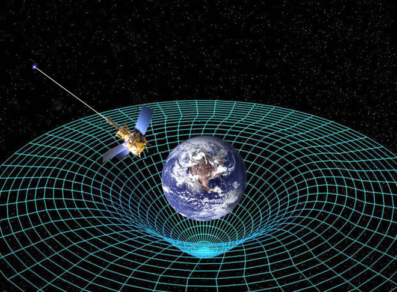

Einstein's Theory of General Relativity
The real deal
In 1905, Albert Einstein determined that the laws of physics are the same for all non-accelerating observers, and that the speed of light in a vacuum was independent of the motion of all observers. This was the theory of special relativity. It
introduced a new framework for all of physics and proposed new concepts of space and time. Einstein then spent 10 years trying to include acceleration in the theory and published his theory of general relativity in 1915. In it, he determined that
massive objects cause a distortion in space-time, which is felt as gravity.
The Tug of Gravity
The real deal
Two objects exert a force of attraction on one another known as "gravity." Sir Isaac Newton quantified the gravity between two objects when he formulated his three laws of motion. The force tugging between two bodies depends on how massive each one
is and how far apart the two lie. Even as the center of the Earth is pulling you toward it (keeping you firmly lodged on the ground), your center of mass is pulling back at the Earth. But the more massive body barely feels the tug from you, while
with your much smaller mass you find yourself firmly rooted thanks to that same force. Yet Newton's laws assume that gravity is an innate force of an object that can act over a distance. - See more at:
http://www.space.com/17661-theory-general-relativity.html#sthash.74ZNbtGp.dpuf
Read More